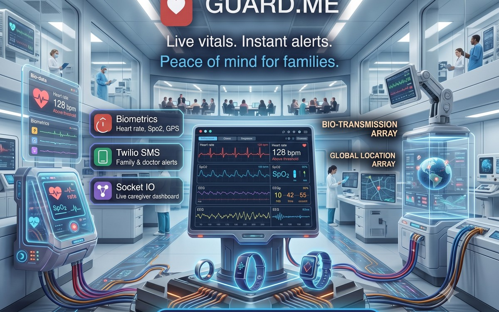

1. Executive Summary & Patient Safety Scope
The WeWatchOver (GuardMe) platform provides continuous health and safety monitoring for elderly and high-risk patients. Connected smartwatches and wearable rings stream medical telemetry 24/7. When dangerous anomalies occur (such as a sudden cardiac spike, oxygen desaturation, or a sudden fall), the backend triggers automated emergency protocols.
My role was to manage, optimize, and maintain this production backend: ensuring zero telemetry data loss, supporting iOS and Android mobile engineering teams, and optimizing the threshold rules engine.
2. Real-Time Telemetry Pipeline & Alert Workflow
3. Key Engineering Challenges Solved
High-Frequency Timeseries Ingestion
Wearable sensors send heart-rate readings every few seconds. To prevent database I/O saturation, telemetry writes were buffered in Redis memory queues and flushed to MongoDB in micro-batches with TTL indexes for automated archiving.
Sub-2-Second Emergency Notification
In medical emergencies, every second matters. The threshold evaluation algorithm runs synchronously in memory upon packet arrival. If thresholds breach, the Twilio REST API request executes with priority concurrency, delivering emergency SMS alerts within 2 seconds of detection.
Mobile Team Collaboration
Supported native Android and iOS mobile developers by designing resilient reconnect protocols, offline data caching sync for when patients temporarily lose cellular coverage, and lightweight JSON payloads.
Building IoT or Mission-Critical Backends?
Whether you need timeseries telemetry pipelines, emergency SMS integration, or live monitoring dashboards, let's discuss your requirements.
Contact Chetan Ladumor